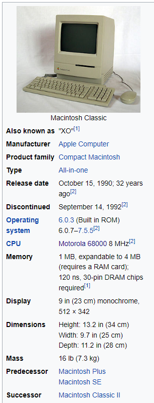

The Macintosh Classic is a personal computer designed, manufactured and sold by Apple Computer from October 1990 to September 1992. It was the first Macintosh to sell for less than US$1,000.[3] Production of the Classic was prompted by the success of the original Macintosh 128K, then the Macintosh Plus, and finally the Macintosh SE. The system specifications of the Classic are very similar to those of its predecessors, with the same 9-inch (23 cm) monochrome CRT display, 512 × 342 pixel resolution, and 4 megabyte (MB) memory limit of the older Macintosh computers.[2] Apple's decision to not update the Classic with newer technology such as a newer CPU, higher RAM capacity or color display resulted in criticism from reviewers, with Macworld describing it as having "nothing to gloat about beyond its low price"[4] and "unexceptional".[5] However, it ensured compatibility with the Mac's by-then healthy software base, as well as enabled it to sell for the lower price, as planned. The Classic also featured several improvements over the aging Macintosh Plus, which it replaced as Apple's low-end Mac computer. It is up to 25 percent faster than the Plus[1] and included an Apple SuperDrive 3.5-inch (9 cm) floppy disk drive as standard. Unlike the Macintosh SE/30 and other compact Macs before it, the Classic did not have an internal Processor Direct Slot, making it the first non-expandable desktop Macintosh since the Macintosh Plus. Instead, it had a memory expansion/FPU slot. |
 |
The Classic is an adaptation of Jerry Manock's and Terry Oyama's 1984 Macintosh 128K industrial design, as had been the earlier Macintosh SE. Apple released two versions. The price and the availability of education software led to the Classic's popularity in education. It was sold alongside the more powerful Macintosh Classic II in 1991 until its discontinuation the next year.
After Apple co-founder Steve Jobs left Apple in 1985, product development was handed to Jean-Louis Gassée, formerly the manager of Apple France. Gassée consistently pushed the Apple product line in two directions, towards more "openness" in terms of expandability and interoperability, and towards higher price. Gassée long argued that Apple should not aim for the low end of the computer market, where profits were thin, but instead concentrate on the high end and higher profit margins. He illustrated the concept using a graph showing the price/performance ratio of computers with low-power, low-cost machines in the lower left and high-power high-cost machines in the upper right. The "high-right" goal became a mantra among the upper management, who said "fifty-five or die", referring to Gassée's goal of a 55 percent profit margin.[6] The high-right policy led to a series of machines with ever-increasing prices. The original Macintosh plans called for a system around $1,000, but by the time it had morphed from Jef Raskin's original vision of an easy-to-use machine for composing text documents to Jobs' concept incorporating ideas gleaned during a trip to Xerox PARC, the Mac's list price had ballooned to $2,495.[7]
MacWEEK magazine reported on July 10, 1990, that Apple had paid $1 million to Modular Computer Systems Inc., a subsidiary of Daimler-Benz AG, for the right to use the "Classic" name as part of a five-year contract.[9] Apple did not renew the contract when it ended.[10] MacWEEK speculated the Macintosh Classic would use the same 8 MHz Motorola 68000 microprocessor and 9-inch (23 cm) display as its predecessors and that the Classic would be priced from $1,500 to 2,150.[9] On October 15, 1990, John Sculley (then Apple CEO) introduced the Classic at a press conference, announcing that pricing would start at $1,000[11] and saying, "To reach new customers, we didn't just lower the prices of our existing products. We redesigned these computers from the ground up with the features customers have told us they value most."[12] Apple's new pricing strategy caused concern among investors, who thought it would reduce profit margins.[13] Brodie Keast, an Apple product marketing manager, said, "We are prepared to do whatever it takes to reach more people with Macintosh [...] The plan is to get as aggressive on price as we need to be."[13] After the release of the Classic, Apple's share price closed at $27.75 per share, down $0.50 from October 12, 1990, and far below its previous 12-month high of $50.37.[13] The Classic was released in Europe and Japan concurrently with the United States release. In Japan, the Classic retailed for ¥198,000 ($1,523),[14] more than in the US but matching the price of the Toshiba Dynabook laptop computer.[14]